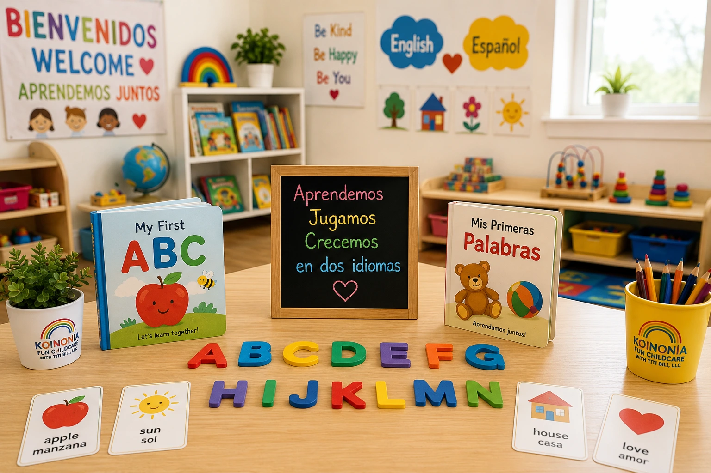

Beneficios de un Programa Bilingüe para Niños
Los primeros años de vida representan una oportunidad extraordinaria para desarrollar habilidades lingüísticas. Los niños tienen una capacidad natural para aprender idiomas y adaptarse a diferentes formas de comunicación. Por eso, los programas bilingües ofrecen ventajas que pueden acompañarlos durante toda su vida.

1. Mayor facilidad para aprender idiomas
Durante la infancia, el cerebro es especialmente receptivo al lenguaje. Los niños expuestos regularmente a dos idiomas pueden desarrollar una pronunciación más natural y una comprensión más profunda de ambas lenguas.
2. Desarrollo cognitivo fortalecido
Diversos estudios han demostrado que los niños bilingües suelen desarrollar habilidades de atención, memoria y resolución de problemas de manera más sólida. Cambiar entre dos idiomas fortalece la flexibilidad mental y la capacidad de adaptación.
3. Mejor comunicación con familiares y comunidad
Aprender inglés y español permite a los niños comunicarse con un mayor número de personas. Esto puede fortalecer los vínculos familiares y facilitar la participación en diferentes contextos sociales y culturales.
4. Más confianza al interactuar
Los niños que se sienten cómodos utilizando dos idiomas suelen mostrar mayor seguridad al expresarse y relacionarse con otras personas, especialmente en entornos diversos.
5. Preparación para el futuro académico
El bilingüismo puede convertirse en una ventaja durante la etapa escolar. Comprender dos idiomas ayuda a desarrollar habilidades de lectura, comprensión y aprendizaje que benefician el desempeño académico.
6. Exposición a diferentes culturas
Aprender dos idiomas también implica conocer diferentes formas de ver el mundo. Los niños desarrollan una mayor sensibilidad cultural y respeto hacia la diversidad.
Reflexión Final
Un programa bilingüe no solo enseña idiomas. También ayuda a formar niños más seguros, adaptables y preparados para desenvolverse en una sociedad cada vez más conectada y multicultural.
¿Buscas un daycare bilingüe en West Haven?
En Koinonia Fun Childcare los niños aprenden y crecen en un ambiente amoroso donde el inglés y el español forman parte natural de su día a día.